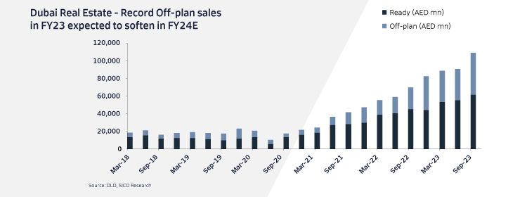
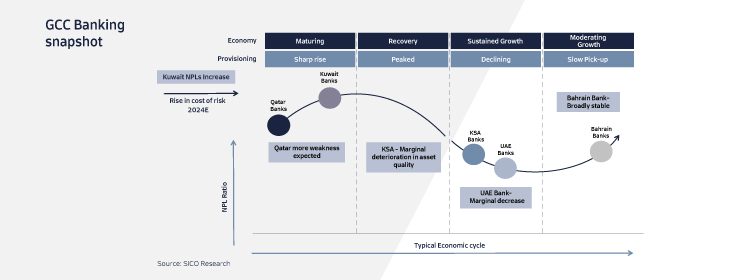
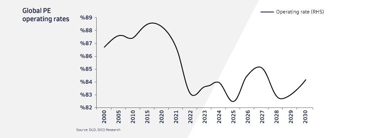

GCC Equities Outlook 2024
GCC Equities market had a strong FY23 with four of the seven exchanges ending in green, led by Dubai which returned c.28%. This was the third year of positive performance in Dubai, supported by real estate and banking heavy weights as well as rally in recent listings. In KSA, banking heavyweights recovered sharply in 4Q23 along with several mid-cap stocks, which are broadly long-term thematic picks.
Looking ahead, multiple macro themes are set to influence GCC Equities. In Saudi, the focus will be on the continuous spending on critical giga projects, despite an expected budget deficit, due to sizeable voluntary cuts of oil production to support the price. In the UAE, earnings will take a hit from 9% corporate taxation implementation. We also expect the robust momentum of Dubai real estate off-plan sales to cool down.

There is optimism in Kuwait under the new Emir in terms of policy changes, with the recent allowance of family visas after a ban of over two years. Oman’s focus on debt reduction implies that the Sultanate’s sovereign rating could very well be upgraded to investment grade, lowering borrowing costs for corporates in general. However, for equities, we need to see pick up in capex, which is not yet clear. Qatar’s market has been broadly on the decline since early 2022, save for a December 2023 rally fueled by domestic institution buying. There is a possibility of many Qatari companies now distributing dividends on a semi-annual or even quarterly basis after regulatory changes allowing this starting 2024. However, a key trigger in the Qatari market would come from a pick-up in the momentum on the Northfield expansion project, expected in 2H24. Within Bahrain, corporate actions and events in market heavy weights will dictate market trends. We also expect GCC IPO activity to remains robust, led by KSA as has been the case.

At the broader level, we have ongoing regional geo-political tensions, especially the impact of risks on freight transit through the Red Sea. In addition, speculation of timing and number of Fed rates cuts, where we price in three cuts which would translate to a mild decline in NIMs. On the positive side, lower interest rates would reduce the debt servicing cost for the banks, which in turn, would stir greater borrowing demand especially from the consumer segment and would likely decrease delinquencies. We see a strong borrowing demand from within KSA driven by a spending on major projects, while the UAE and Kuwait banks would see a more normalised mid-single-digit loan growth. On the other hand, Qatari banks would see a muted first half with a borrowing pick-up towards the second half of the year driven by the North Field expansion project.
The regional petrochemical sector has underperformed due to twin effects of a global manufacturing recession and record supply additions. However, asset valuations of several petrochemical cos. suggest that a bottom may be in place and risk-reward favorable for long-term investors. In the near term, fertilizers remain a safe haven. KSA’s recent repricing of fuel has affected the broader industrial sector, but the impact has been stronger on cement. Yet, we see central region cement players benefitting from structural demand tailwinds and potential price recovery. Healthcare also remains an attractive theme to play in KSA for 2024. Additionally, in general, GCC companies with material exposure to Egypt will witness further hit from pound devaluation.

Overall, 2024 could be much more challenging for GCC Equities given the uncertainties on oil, fed cuts, China recovery, liquidity, and geopolitical tensions. However, tactical stock positioning based on a bottom-up approach should yield promising returns to investors than a passive approach. Our GCC Equities strategy piece titled “Navigating through flickering lights” discusses top-15 stock ideas for 2024. Our previous year strategy note’s top-15 recommendations generated an alpha of c.11% at an aggregate level.